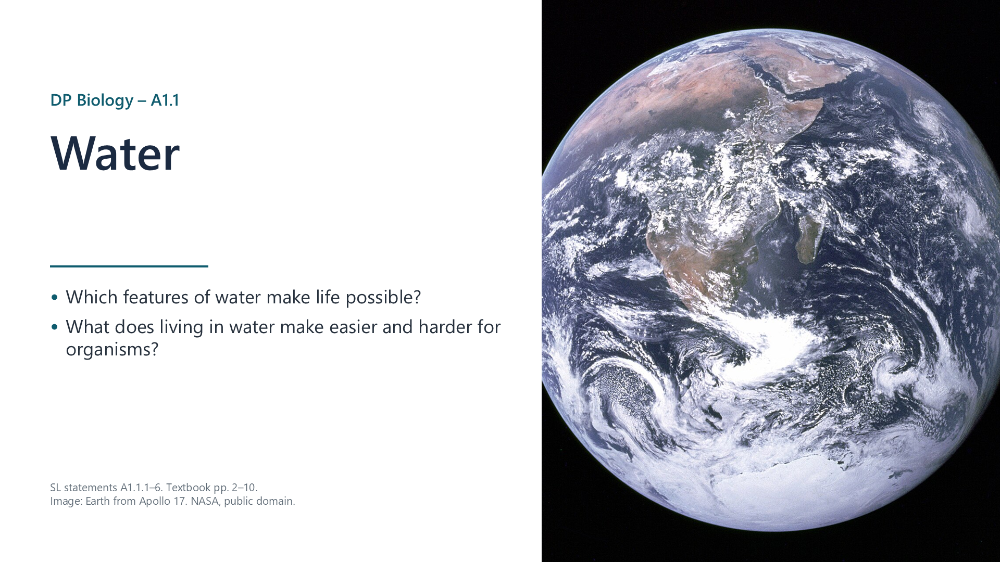
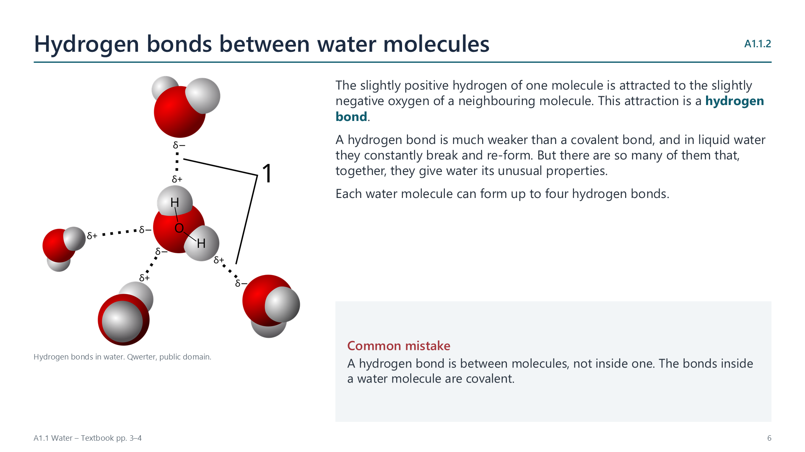
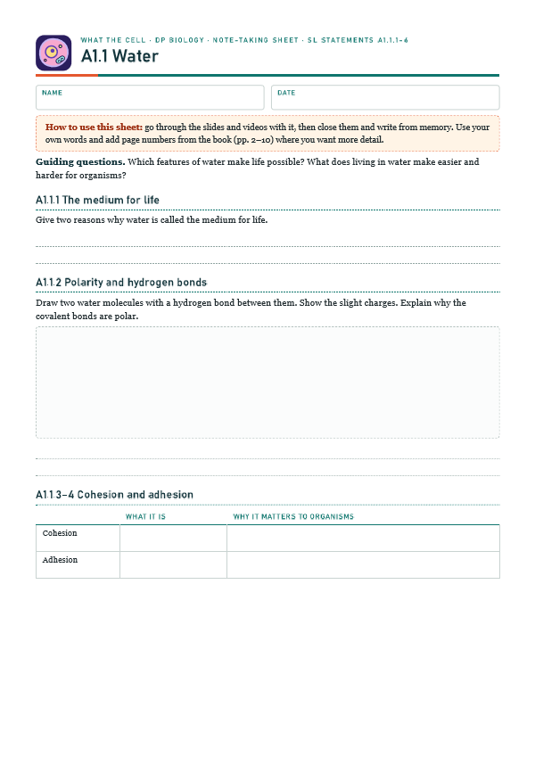
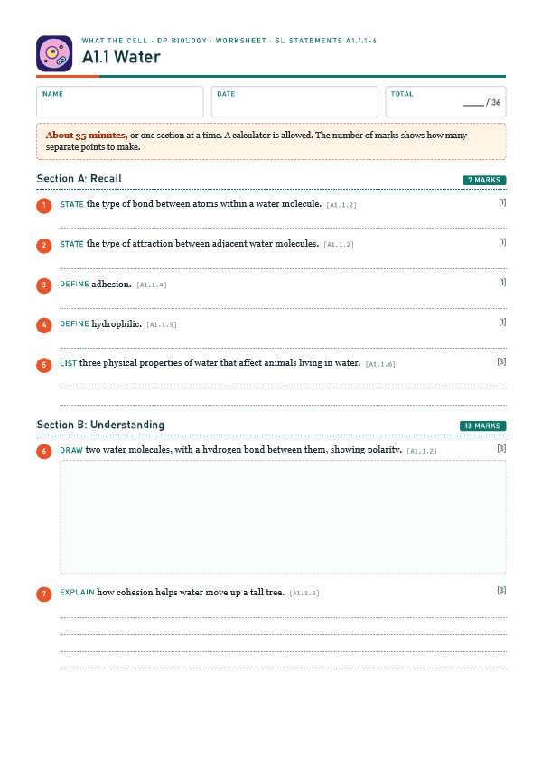

Water is the medium for life
pp. 2–10The first cells arose in water, and most processes of life still occur in it. Water makes up much of the cytoplasm, and it is the main part of blood plasma.

Written for this site from the class slides. The chapter is on pages 2–10 of the course textbook. Image credits are on slide 17.
The first cells arose in water, and most processes of life still occur in it. Water makes up much of the cytoplasm, and it is the main part of blood plasma.
Oxygen attracts the shared electrons in its covalent bonds more strongly than hydrogen does, so oxygen has a slight negative charge, and hydrogen a slight positive charge. The molecule is polar.
The slightly positive hydrogen of one molecule attracts the slightly negative oxygen of another. This is a hydrogen bond. One is weak, but there are very many in water.

Cohesion is the attraction between water molecules, due to hydrogen bonds. It keeps a column of water intact under tension in xylem. It also causes surface tension, so a water surface can be a habitat for small animals such as water striders.
Adhesion is the attraction between water and polar or charged materials. It causes capillary action, which draws water up through narrow channels in soil, and through cellulose in plant cell walls.
Watch out: cohesion is between water molecules, and adhesion is between water and something else.
A wide variety of hydrophilic substances dissolve in water, and most enzymes catalyse reactions in aqueous solution. Water also transports substances in blood, xylem and phloem.
| Substance | Solubility | How it is carried in blood |
|---|---|---|
| Glucose | Soluble | Dissolved in plasma |
| Sodium chloride | Soluble | Dissolved in plasma, as ions |
| Oxygen | Poorly soluble | Mostly bound to haemoglobin |
| Fats and cholesterol | Insoluble | Inside lipoprotein particles |
Some molecules depend on being hydrophobic. For example, the core of a membrane forms a barrier, and leaf wax reduces water loss.
| Property | Water compared with air | Ringed seal | Black-throated loon |
|---|---|---|---|
| Buoyancy | Much higher | Fat helps it float | Dense bones, and air sacs it can compress to dive |
| Viscosity | Much higher: more drag | Streamlined shape, flippers | Torpedo shape, webbed feet |
| Thermal conductivity | Much higher: heat lost fast | Thick blubber | Dense, oiled feathers |
| Specific heat | Much higher: stable temperature | A stable habitat for both | |
Select a video to play it here. Select it again to close it.
Print this guide and complete it as you work through the slides and videos. It asks for your own explanations, so close the notes while you try each section.

The self-check needs JavaScript to run.
A printable worksheet covering all six statements, from quick recall to data questions and a longer answer. It has 36 marks and takes about 35 minutes, or you can do one section at a time.
Your teacher has the mark scheme.

You will need: Coins, pipettes, water, cooking oil, thin glass tubes, wax paper
Safety: Low risk. Take care with glass tubes, and wipe up spills.
Carry this out with your teacher's supervision and follow your school's lab rules.
In the late 1960s, scientists reported polywater, an unusual form of water. It was later traced to contamination.
Researchers around the world tested the claim and rejected it. Consider what this says about the value of replication.
Summarised in our own words. Use each code to find the exact wording in your textbook or the IB subject guide.
© 2026 Akash Parthi Bendran. Please ask before using or sharing any resources from this site: see permission to use.